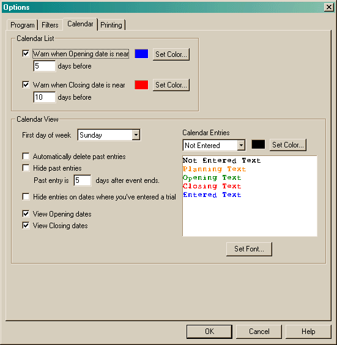

The Calendar option page is used to set various Calendar options.

The Calendar List section allows you to modify how entries appear in the list when they have an opening and/or closing date and you have marked that you are going to enter them.
The Calendar View section allows you to modify how the calendar looks.
First day of the week allows you can change which day of the week should appear at the start of each line.
Once a date has passed, the old entry can either be hidden (Hide past Entries) or deleted (Automatically delete past entries). In either case, you can configure the program to define how much time should pass before an entry is considered past. (If both options are set, delete takes precedence.) Setting this value too low can make it difficult if you wish to create a trial directly from the calendar entry. (Say you set the value to 1, then on the Wednesday after a weekend trial you want to enter your runs into the program - the calendar entry will no longer be available to create the trial entry from since it is now more than one day after the end of the trial.)
The Hide entries on dates where you've entered a trial is convenient for hiding trials that you will not be entering. It helps keep the calendar from being too cluttered.
View Opening dates will add the opening date onto the calendar for any entries that have an opening date and are marked that you are planning on entering them. Similarly, closing dates are added onto the calendar when View Closing dates is set. If planned-on entries are filtered, opening and closing dates will be filtered also.
The Calendar Entries combobox contains five entries: "Not Entered", "Planning", " Opening", " Closing", "Entered". The Set Color button that follows allows you to set the color for the currently selected item. When you change the color of an item, the area below will be updated giving a preview of what each entry will look like.
Finally, the Set Font button in this section will set the font used in the Calendar View while viewing. (When printing, the font specified in the Printing options will be used.)
All options are saved into the local Windows Registry.